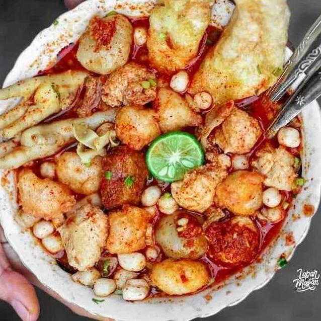

What news ?
new menu at KrustyBahari, Nasi liwet topped with Indonesian flavors combined with seblak curry ready to increase your appetite ...Read more

Papeda, a typical Maluku and Papuan dish, is sago porridge served with a savory yellow fish sauce. Its chewy and soft texture gives it a unique sensation ...Read more
Young coconut ice is a refreshing tropical drink, made from soft young coconut meat and naturally sweet coconut water. Served with ice cubes, this drink is the perfect choice ...Read more

Seblak is not just food, but a taste challenge! With spicy sauce, wet crackers, and toppings full of surprises, seblak is ready to make your tongue dance. If you're feeling upset ...Read more
Viral! because of a breakup, this man was determined to eat a side dish of crackers from Zeus, the effect was extraordinary ...Read more

Pahing, 12 Rajab 1444 H, the Bahari family inaugurated the opening of a new branch of the KrustyBahari restaurant in the city of Kuvukiland. It was warmly welcomed by enthusiastic residents ...Read more
This woman in Samboga Kidul district was hysterical when she found out that KrustyBahari had opened a new branch, then this woman reflexively ate it ...Read more
The Bahari family prayed together after inaugurating the 1,346th branch in Samboga Bay. The event was led by Ustadz Utjok and then continued with the khodam check procession ...Read more